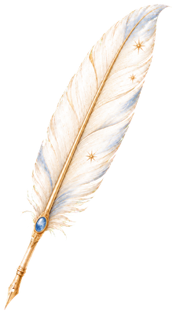

狗狗我呀也是到了狗生巅峰。吃喝玩乐，狗生不过如此 🐶
月桂之间个人主页
☾
请将首页视频命名为 home-hero.mp4
并放入 assets 文件夹
向下翻阅
PORTRAIT
Ⅱ · SELECTED FILMS
视频专区
选择星座
心情 关系 行动
Ⅲ · GUEST BOOK
留下一句话
关于某支视频、一个困惑，或只是今天的心情。
THE MOVING PICTURES
数字纪念馆
数字纪念馆，留着给老了看！


欢迎来到斯达的世界
本世纪初，一个不知名的偏远山村，一位伟大的 AI 探险者诞生了。亲爱的冒险家们准备好了吗？欢迎来到斯达的世界！
我是一个热爱探索新鲜事物、喜欢徒步爬山、热爱户外的冒险者。非常的 E，所以导致我的朋友经常说我不擅长内省；脑子里一堆赚钱 idea，实际一个大穷逼。
目前正在探索 AI，人生终极目标是开一家养老院，支线任务是开一家情趣用品小店（世界不能没有 SEX，不是嘛）。
✦☄
RECENT UPDATES
近日生活
最近在读
十字路口
最近狂刷
整太线失事视频
最近感兴趣
AI 编程
斯达星迹
2026.01支线
激动地开始 AI 编程，上线了我的个人网站
主线2025.09
toB 软件产品经理，RPA + AI 方向
2025.04支线
开通股票账户，一根绿油油的小韭菜诞生！
2024.11支线
发布第一条抽象视频，成为 B 站 UP 主
2024.02支线
开了一家女生情趣玩具店
主线2023.07
toB 软件产品经理，BI 方向
FROM THOUGHT TO FORM
把想法，做出来
每一个念头，都值得被实现；AI 如同魔法，让灵感照进现实。
BEGIN WITH A LETTER
也许一次合作、一点灵感，或一句偶然的问候，会成为彼此认识的开始。

让我们开始一场谈话
我通常会在 2–3 个工作日内回复。涉及咨询预约时，请简单说明你希望讨论的主题。
- 电子邮箱
- hello@atelier-luna.cn
- 内容平台
- 小红书 / Bilibili @月桂之间
- 工作时间
- 周二至周六 · 10:00—18:00